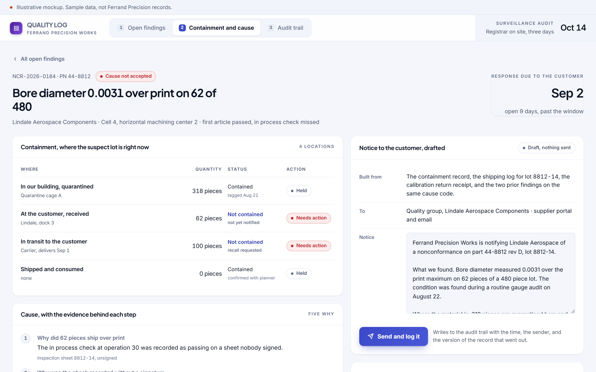
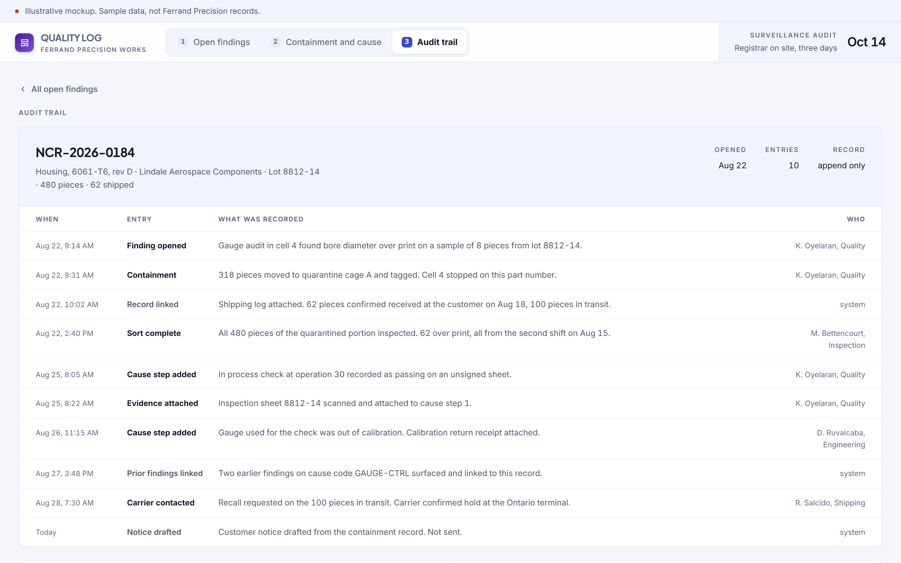
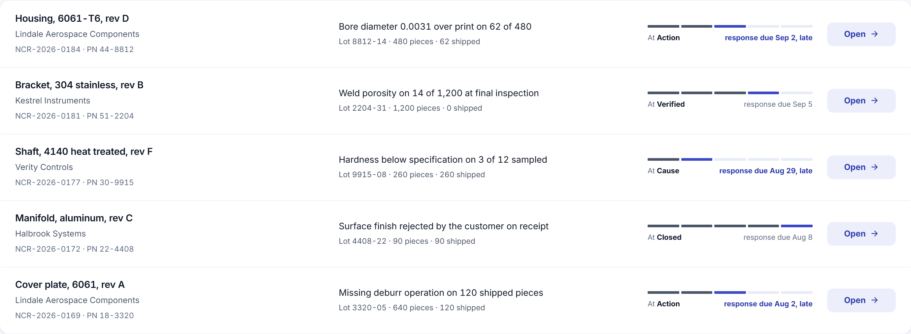
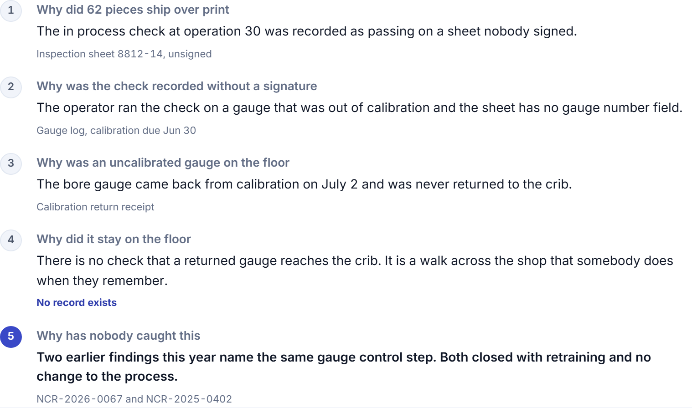
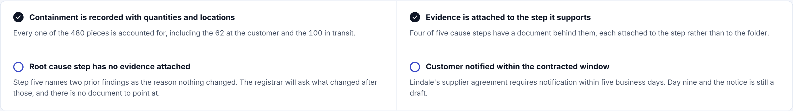

Concept, built to show the software behind a manual role. Not delivered client work.
The findings live where an auditor cannot see them.
Three findings are in a spreadsheet, two in an email thread, and one in a folder on a desk. A registrar will ask for any of them at random.
The role you would hire for
The role is opening and closing nonconformance reports, running containment, leading root cause and corrective action, maintaining the quality record for a certification standard, and supporting customer and registrar audits. The standard and the customer response windows set the pace.
The manual process that implies
A nonconformance is opened in a spreadsheet, containment happens on the floor and gets described in an email, root cause is a conversation, and the corrective action is a paragraph written the week before the audit. Every part of that is real work done by capable people. None of it produces a record where the evidence is attached to the step it supports, which is the only form an auditor accepts.
20 seconds
to produce a finding with its evidence for a registrar, against roughly two days of assembling folders
Quality findings live in a spreadsheet nobody can produce during an audit. The record has to be the working tool, not a document assembled afterward from memory.
Three screens
Built to be read in a screenshot, then clicked through by whoever it lands with.



Detail
The three places where this stops being a report and starts being a tool.



What it would take to build for real
The concept is a proposal about the shape of the work. This is the honest version of the rest.
What it reads
The existing nonconformance spreadsheet, shipping and receiving records for where suspect material went, the gauge and calibration log, and the customer supplier agreements for response windows.
What it writes
An append only record with evidence attached per step, a customer notice with the version that was sent, and a cause code that makes repeat findings visible instead of invisible.
What is genuinely hard
Making the record faster to use than the spreadsheet it replaces. If entering a containment location takes longer than typing it into a cell, the record is empty within a month and the audit is worse than before.
Shape of the work
Five to seven weeks. Roughly $12,000 to $18,000. Containment and the trail first. The cause chain and the readiness check follow once people are actually working in it.
Every engagement is staffed with a dedicated team and a named project lead who works directly with the person who owns the process. The software above was built before anyone paid for anything, which is the point.